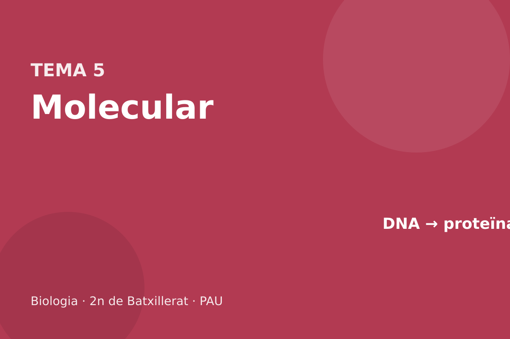

Genètica molecular i biotecnologia

Replicació, expressió gènica, codi, mutacions, PCR, CRISPR, OMG i clonació.
Què entra a la PAU
Entra la relació entre estructura i funció dels àcids nucleics, la comparació dels genomes i de l’expressió en procariotes i eucariotes, la replicació pel model procariota, la transcripció, el codi genètic i la traducció, amb problemes de seqüència. Entra la regulació: l’operó com a exemple procariota, i en eucariotes el promotor, els intensificadors, els factors de transcripció, activadors i repressors, les marques epigenètiques i la diferenciació. Entren les mutacions lligades a la replicació, el càncer (oncogens i gens supressors) i tot el bloc de biotecnologia: restricció, DNA recombinant, clonació molecular, PCR, CRISPR-Cas9, la diferència entre OMG i transgènic, els vectors i la teràpia gènica.
5.1 Dogma i genomes
La informació va, en una cèl·lula, de DNA a RNA (transcripció) i d’RNA a proteïna (traducció). El DNA es copia a si mateix (replicació). L’excepció que cal saber és la retrotranscripció: alguns virus d’RNA fan DNA a partir de l’RNA. No és el camí ordinari d’una cèl·lula. Les proteïnes no es transcriuen de tornada a àcid nucleic.

El genoma procariota és un cromosoma circular, sense histones autèntiques (hi ha proteïnes semblants), amb molt poc DNA no codificant, i sovint plasmidis: molècules circulars petites, independents, que es repliquen soles i porten gens accessoris (resistències, virulència). No hi ha nucli: transcripció i traducció poden coincidir en el temps i en l’espai.
El genoma eucariota nuclear és lineal, amb histones i amb molta seqüència no codificant (introns, regions reguladores, DNA repetitiu). Els gens es transcriuen al nucli i l’RNAm madur surt al citosol per ser traduït. Mitocondris i cloroplasts tenen un genoma circular propi, residual, de tipus bacterià.
L’RNAm porta el missatge, en codons de tres bases, de 5′ a 3′. L’RNAt porta un aminoàcid al braç acceptor i un anticodó que reconeix el codó; la forma de trèvol és l’esquema de batxillerat. L’RNAr, juntament amb proteïnes, forma el ribosoma. Hi ha altres RNA (el de l’operó no es tradueix sencer; microRNA reguladors): a la PAU n’hi ha prou amb saber que no tot l’RNA és missatger.
DNA i RNA
| DNA | RNA | |
|---|---|---|
| Sucre | desoxiribosa | ribosa |
| Bases | A, T, G, C | A, U, G, C |
| Cadenes | dues, antiparal·leles | normalment una |
| On, en un eucariota | nucli, mitocondri, cloroplast | se’n fa al nucli i es tradueix al citosol |
| Funció | guardar la informació | expressar-la (RNAm, RNAt, RNAr) |
El flux habitual és DNA → RNA → proteïna. La replicació copia DNA en DNA. La transcripció copia DNA en RNA. La traducció llegeix l’RNAm i fa proteïna. Un retrovirus fa l’excepció RNA → DNA, amb la retrotranscriptasa, i després segueix el flux habitual. No vol dir que la informació torni de la proteïna al DNA: això no passa.
El genoma humà és nuclear, lineal, amb histones, més el genoma circular dels mitocondris. El d’un bacteri és un cromosoma circular principal i, sovint, plasmidis. El d’un virus pot ser DNA o RNA, d’una cadena o de dues, i no és un genoma cel·lular: no es replica sol.
Per què es diu que el DNA és l’arxiu i l’RNA la còpia de treball, si tots dos són àcids nucleics?
Perquè el DNA es queda al nucli (o al cromosoma bacterià) i es copia sencer només quan la cèl·lula es divideix. L’RNAm se’n fa un tros, el d’un gen, es fa servir per fabricar proteïna i es degrada. Es poden fer moltes còpies d’un gen sense tocar l’arxiu. L’RNAt i l’RNAr ni tan sols es tradueixen: són part de la maquinària.
Un virus amb RNA entra en una cèl·lula i al cap d’unes hores hi ha DNA víric integrat. Quin enzim víric ho explica, i quin pas del dogma s’ha fet al revés?
La retrotranscriptasa, que copia RNA en DNA. El pas invertit és la transcripció, no la traducció: la proteïna no s’ha llegit per fer àcid nucleic. Després, aquest DNA es transcriu amb la maquinària de la cèl·lula, en el sentit habitual.
Ordeneu els processos i digueu quin no passa al nucli d’un eucariota: replicació, transcripció, traducció.
L’ordre habitual és replicació (quan la cèl·lula es divideix), transcripció i traducció. Al nucli hi ha replicació i transcripció. La traducció és al citosol, als ribosomes. L’RNAm ha de sortir. En un bacteri els tres llocs se superposen al citoplasma, i la traducció pot començar sobre un RNAm que encara s’està fent.
Un retrovirus fa DNA a partir d’RNA. Això vol dir que una proteïna es pot traduir en sentit invers cap a RNA?
No. El pas excepcional és d’RNA a DNA, un àcid nucleic a un altre, amb la retrotranscriptasa. No hi ha cap maquinària que llegeixi una proteïna i en faci un gen. El dogma, en la forma que es demana, admet aquesta excepció i no admet la de la proteïna cap enrere.
5.2 Replicació
La replicació és semiconservativa: cada cadena vella serveix de motlle i cada filla queda amb una cadena vella i una de nova. El model que les orientacions demanen és el procariota, amb una sola origen. La helicasa obre la doble hèlix. Les proteïnes SSB mantenen les cadenes separades. La topoisomerasa (DNA-girasa en bacteris) talla i torna a unir per treure la tensió que s’acumula davant de la forquilla. La primasa sintetitza un encebador curt de RNA, perquè la DNA-polimerasa no pot començar una cadena: només afegeix nucleòtids a un 3′–OH.
La síntesi és sempre 5′→3′. Sobre el motlle que queda orientat 3′→5′ en el sentit de la forquilla, la cadena nova creix de manera contínua: és la cadena líder. Sobre l’altre motlle, la polimerasa va a batzegades, lluny de la forquilla, i fa fragments d’Okazaki, cadascun amb el seu encebador: és la cadena retardada. En bacteris, la DNA-polimerasa III allarga; la DNA-polimerasa I treu l’encebador de RNA i omple el forat amb DNA; la DNA-ligasa tanca l’últim fosfodièster. La polimerasa corregeix: si entra una base mal aparellada, l’activitat exonucleasa 3′→5′ la treu. Quan la correcció falla, queda una mutació.

En eucariotes hi ha moltes origens (el genoma és enorme i lineal), els enzims tenen altres noms i els extrems, els telòmers, no es poden acabar del tot amb el mecanisme dels fragments d’Okazaki. La telomerasa, una polimerasa amb un motlle de RNA propi, els allarga a les cèl·lules que s’han de continuar dividint. El principi —semiconservatiu, antiparal·lel, encebadors, líder i retardada— és el mateix.
Replicació procariota i eucariota
| Procariota | Eucariota | |
|---|---|---|
| Origens | una | moltes |
| Qui allarga | DNA-polimerasa III | diverses polimerases |
| Qui treu l’encebador | DNA-polimerasa I | maquinària equivalent |
| Extrems | el cromosoma és circular | telòmers; la telomerasa els allarga en algunes cèl·lules |
| Comú | semiconservativa, síntesi només 5′→3′, cadena líder i retardada, helicasa, primasa, ligasa, SSB | |
Per què la cadena retardada no es pot fer d’una sola tirada, en el mateix sentit que avança la forquilla?
Perquè la polimerasa només afegeix nucleòtids a un extrem 3′. Al motlle que queda orientat al revés, l’única manera d’avançar amb la forquilla és anar fent fragments cap enrere, cadascun amb el seu encebador.
La replicació és semiconservativa: cada filla es queda amb una cadena vella i una de nova. La doble hèlix s’obre per l’helicasa. La topoisomerasa talla d’una banda perquè el DNA no s’embulli en desenrotllar-se. Les proteïnes d’unió a cadena senzilla impedeixen que es torni a tancar. La primasa posa un encebador de RNA, perquè la DNA-polimerasa no sap començar: només allarga un 3′–OH. Llegeix el motlle 3′→5′ i sintetitza 5′→3′.
A la forquilla, una cadena (la líder) es fa seguida, en el sentit d’obertura. L’altra (la retardada) es fa a trossos, els fragments d’Okazaki, cadascun amb el seu encebador, perquè el motlle mira al revés. Després es treu l’RNA, es reomple amb DNA i la ligasa tanca el nick. En bacteris, la polimerasa III allarga i la I treu l’encebador. En eucariotes hi ha diverses polimerases i el problema dels extrems: la cadena retardada no es pot acabar del tot, i els telòmers escurcen. La telomerasa, activa a cèl·lules germinals i a moltes tumorals, hi afegeix DNA.
Per què la cadena retardada necessita molts encebadors i la líder, en una forquilla, només un?
Perquè la polimerasa només afegeix al 3′. Al motlle que queda orientat a favor de la forquilla, un sol encebador permet anar allargant sense parar. A l’altre motlle, cada cop que s’obre un tram nou el 3′ útil queda a l’extrem oposat al sentit d’obertura, i cal un encebador nou per fer un fragment cap enrere.
Meselson i Stahl van fer créixer bacteris en nitrogen pesant i després en nitrogen lleuger. Després d’una generació tot el DNA tenia densitat intermèdia. Què hauria sortit si la replicació fos conservativa?
Amb el model conservatiu, la doble hèlix vella es quedaria sencera (pesant) i la nova seria tota lleugera: dues bandes, no una d’intermèdia. La banda intermèdia única és la semiconservativa: cada dúplex té una cadena pesant i una de lleugera. A la segona generació apareix, a més, DNA tot lleuger, i la banda intermèdia es manté.
Esquerra de la forquilla, la cadena nova creix cap a l’obertura; dreta, creix a trossos en sentit contrari. Quina és la líder, quina la retardada, i quin enzim uneix els trossos un cop tret l’encebador?
La de l’esquerra, contínua, és la líder. La de la dreta és la retardada, feta de fragments d’Okazaki. La ligasa segella el nick que queda quan s’ha substituït l’RNA de l’encebador per DNA. La polimerasa allarga; no tanca el nick. La primasa posa l’encebador i no allarga el DNA.
Per què els telòmers s’escurcen a les cèl·lules somàtiques i no, o menys, a la línia germinal?
Perquè la telomerasa, que allarga els extrems, és activa a la línia germinal i està apagada a la majoria de cèl·lules somàtiques. Sense ella, la cadena retardada no es pot completar a l’extrem. Moltes cèl·lules tumorals la reactiven, i per això poden dividir-se sense escurçar el telòmer.
5.3 Transcripció i codi genètic
La transcripció copia un tros de DNA a RNA. La cadena que es llegeix és el motlle, en sentit 3′→5′. L’RNA creix 5′→3′ i queda amb la mateixa seqüència que la cadena codificant (la que no es llegeix), canviant T per U. En bacteris, l’RNA-polimerasa reconeix el promotor amb l’ajuda del factor σ, transcriu i s’atura al terminador. L’RNAm es pot traduir de seguida, i un mateix RNAm pot portar diversos gens (policistrònic): és el cas dels operons.
En eucariotes, l’RNAm el fa l’RNA-polimerasa II. Abans de sortir del nucli es madura: cap de 7-metilguanosina a l’extrem 5′, cua de poli-A a l’3′ i eliminació dels introns (splicing), de manera que només els exons queden a l’RNAm. Un gen pot donar més d’un RNAm si l’splicing tria exons diferents. L’RNAm eucariota és monocistrònic.

El codi genètic és la correspondència entre codons de l’RNAm i aminoàcids. És de tripletes (64 codons), degenerat (hi ha 61 codons per a 20 aminoàcids; diversos codons codifiquen el mateix aminoàcid, sovint coincidint en les dues primeres bases), continu (sense comes), no solapat i gairebé universal. L’AUG és l’inici i codifica metionina (en bacteris, la primera és formilmetionina). UAA, UAG i UGA són parada i no codifiquen aminoàcid. Per traduir una seqüència cal fixar el marc: es comença a l’AUG i es llegeix de tres en tres fins a un codó de parada. Un problema de PAU sol donar la taula del codi; no cal memoritzar-la sencera, però sí l’AUG i les parades, i saber completar la cadena complementària.
Motlle de DNA: 3′–TAC TTT GGG ATC–5′. Escriviu la cadena codificant, l’RNAm i els aminoàcids (UUU és Phe, CCC és Pro, UAG és parada, AUG és Met).
Codificant: 5′–ATG AAA CCC TAG–3′. RNAm: 5′–AUG AAA CCC UAG–3′. Pèptid: Met–Phe–Pro, i UAG atura. No es tradueix el codó de parada.
Us donen un fragment d’RNA: 5′–AUU CGU GAG–3′. Demanen la cadena de DNA que ha servit de motlle.
El motlle és antiparal·lel i complementari, amb T on l’RNA té A, A on té U, etc. Motlle: 3′–TAA GCA CTC–5′. La cadena codificant seria 5′–ATT CGT GAG–3′. Si l’enunciat diu «DNA complementària» sense precisar, mireu el sentit que us demanen i escriviu-lo; el motlle és el que s’aparella amb l’RNA.
Transcripció: procariotes i eucariotes
| Procariota | Eucariota | |
|---|---|---|
| Enzim de l’RNAm | una RNA-polimerasa, amb factor σ | RNA-polimerasa II |
| On | citoplasma (no hi ha nucli) | nucli |
| Maduració | no: es pot traduir de seguida | cap 5′, cua poli-A, eliminació d’introns |
| RNAm | sovint policistrònic (operó) | monocistrònic |
En els dos casos el motlle es llegeix 3′→5′ i l’RNA creix 5′→3′. La cadena codificant no es llegeix: l’RNA s’hi assembla, amb U en lloc de T.
Motlle 3′–TAC GGA TTA ACT–5′. Escriviu l’RNAm i digueu on comença i on s’atura la traducció si AUG és inici, UAA és parada, GGA és Gly i UUA és Leu. La taula de l’examen us donaria aquests codons.
RNAm 5′–AUG CCU AAU UGA–3′. Comença a AUG (Met) i s’atura a UGA, que no es tradueix. Entre mig, CCU i AAU. El motlle començava per TAC, que és l’AUG: no cal inventar un marc diferent.
La transcripció la fa l’RNA-polimerasa. No necessita encebador. Llegeix la cadena motlle 3′→5′ i l’RNA creix 5′→3′. L’RNA és complementari del motlle i idèntic a la cadena codificant, amb U en lloc de T. El promotor és DNA: és on s’uneix la polimerasa, no es transcriu. En bacteris, el factor σ reconeix el promotor i després se’n va. En eucariotes, l’RNAm el fa la polimerasa II i el transcrit primari es madura: cap 5′, cua de poli-A i eliminació d’introns. Els exons són el que es queda. Un gen pot donar diversos RNAm segons quins exons es conservin. L’RNAm bacterià no es madura així i sovint porta diversos gens (operó).
El codi es llegeix de tres en tres, sense comes, en el sentit 5′→3′ de l’RNAm. És degenerat: diversos codons codifiquen el mateix aminoàcid, sobretot a la tercera base. És gairebé universal. AUG és metionina i inici. UAA, UAG i UGA són parada i no codifiquen aminoàcid. La taula, a la prova, la donen: no s’ha de memoritzar, s’ha de saber fer servir sense canviar el marc.
Cadena codificant 5′–ATG TTT GGA TAA–3′. Escriviu l’RNAm i la proteïna, si UUU és Phe, GGA és Gly, AUG és Met i UAA és parada.
La codificant té la mateixa seqüència que l’RNA, amb T en lloc d’U. RNAm: 5′–AUG UUU GGA UAA–3′. Proteïna: Met–Phe–Gly, i UAA no es tradueix. Si es parteix el marc un nucleòtid més enllà, AUG desapareix i la lectura és una altra. El marc el fixa l’AUG d’inici, no el primer triplet que ens vingui de gust.
Un intró es queda dins l’RNAm per error. Què li passa a la proteïna, encara que l’exó sigui correcte?
El marc de lectura a partir de l’intró gairebé segur que canvia, o apareix una parada prematura. La proteïna serà més llarga, més curta o amb una seqüència diferent des d’aquell punt. Que l’exó «estigui bé» no salva el producte si el ribosoma llegeix nucleòtids de més.
Motlle 3′–TAC GGT ATT–5′. Escriviu l’RNAm 5′→3′ i digueu quin triplet és l’inici i quin no s’ha de traduir si ATT del motlle correspon a la parada. GGA és Gly. AUG és Met.
RNAm 5′–AUG CCA UAA–3′. AUG és l’inici (Met). CCA seria Pro, no Gly: GGA seria el complement d’un motlle CCT, que aquí no hi és. UAA és parada i no es tradueix. La proteïna és només Met, si no hi ha més codons entre l’inici i la parada. Cal llegir el motlle al revés i canviar T per U, no copiar-lo tal qual.
Un gen eucariota té 4 exons i 3 introns. L’RNAm madur, quants trams de la seqüència del gen conserva, i on s’ha fet la maduració?
Conserva els 4 exons, units. Els introns s’han eliminat. La maduració és al nucli, abans de sortir. El ribosoma no veu els introns. Si es seqüencia el gen i es compara amb l’RNAm, els trossos que falten a l’RNA són els introns.
RNAm 5′–AUG UUC UAA GGG–3′. La taula diu que UUC és Phe i GGG és Gly. Quina proteïna se’n fa, i per què la glicina no hi és?
Met–Phe. UAA és parada i el ribosoma se’n va. GGG és a continuació i no es llegeix. Una parada al mig no es «salta». Si l’enunciat hagués posat UUC i GGG abans de la parada, la glicina hi seria. L’ordre és el que mana, no la llista d’aminoàcids que algú veu a la taula.
El marc es fixa a l’AUG. Si es comença un nucleòtid abans, AUG desapareix i la lectura és una altra proteïna, o cap. Per això una inserció d’una base és greu: no canvia una lletra, canvia totes les de després.
5.4 Traducció
La traducció es fa al ribosoma. En procariotes és 70S (subunitats 30S i 50S); al citosol eucariota, 80S (40S i 60S). Els ribosomes de mitocondris i cloroplasts són 70S. Cada aminoàcid s’uneix al seu RNAt per una aminoacil-RNAt-sintetasa, amb despesa d’ATP: és la càrrega, i és específica. El ribosoma llegeix l’RNAm de 5′ a 3′ i té tres llocs: A (entra l’RNAt carregat), P (porta la cadena naixent) i E (l’RNAt buit en surt).
A l’inici, la subunitat petita reconeix l’AUG, hi entra el primer RNAt i es tanca la subunitat gran. A l’elongació, l’RNAt del lloc A aparella l’anticodó amb el codó, la peptidil-transferasa (una activitat de l’RNAr, no d’una proteïna) fa l’enllaç peptídic i el ribosoma es desplaça un codó. A la terminació, un codó de parada és reconegut per un factor d’alliberament, no per un RNAt, i la cadena se separa.

La hipòtesi del balanceig: la tercera base del codó admet aparellaments menys estrictes, i per això n’hi ha prou amb menys de 61 RNAt. Explica la degeneració, però no cal citar-la.
El ribosoma té una subunitat petita, que lliga l’RNAm, i una de gran, que fa l’enllaç peptídic. Els llocs són A (entra l’RNAt amb l’aminoàcid), P (porta la cadena) i E (surt l’RNAt buit). L’RNAt porta l’aminoàcid a l’extrem 3′ i l’anticodó, que s’aparella antiparal·lel amb el codó. La wobble explica part de la degeneració: la tercera base no sempre aparella estricte, i per això no calen 61 RNAt.
La traducció comença a l’AUG, que a eucariotes és a prop del cap 5′. Creix de N-terminal a C-terminal, mentre l’RNAm es llegeix 5′→3′. S’atura a un codó de parada, on no entra un RNAt sinó un factor d’alliberament, i la cadena se separa. En bacteris, la traducció pot començar abans que s’acabi la transcripció. En eucariotes, no: l’RNAm ha de sortir del nucli.
Un codó és 5′–GCA–3′. Quin anticodó hi encaixa, escrit 5′→3′, i quin aminoàcid hi va si GCA és Ala?
L’anticodó antiparal·lel és 3′–CGU–5′, que escrit en el sentit convencional 5′→3′ és 5′–UGC–3′. L’aminoàcid és l’alanina, el de la taula del codó, no el de l’anticodó. L’error habitual és aparellar en paral·lel i llegir UGC com si fos el codó.
Un antibiòtic impedeix que l’RNAt entri al lloc A. En quin pas s’atura la traducció, i la transcripció en queda afectada?
S’atura l’elongació: no pot entrar el següent aminoàcid. El lloc P es queda amb la cadena a mig fer. La transcripció és un altre enzim i un altre motlle; no s’atura per aquest antibiòtic, llevat que l’enunciat digui que la molècula també toca la polimerasa. En un bacteri, els ribosomes que ja estaven traduint aquell RNAm es congelen.
Al lloc P hi ha un RNAt amb una cadena de 15 aminoàcids. Al lloc A entra el següent. Després de la formació de l’enllaç, on és la cadena de 16, i què hi ha al lloc E?
La cadena de 16 queda unida a l’RNAt que havia entrat al lloc A. El que era al P es queda sense aminoàcid i, en el desplaçament, passa al lloc E i surt. El ribosoma avança un codó. La cadena creix per l’extrem carboxil, no per l’amino.
Un codó de parada no té RNAt. Com s’acaba la proteïna, si no entra cap aminoàcid?
Entra un factor d’alliberament, que reconeix el codó i fa que la cadena se separi de l’últim RNAt. No s’afegeix un aminoàcid «de parada». El codó ocupa el lloc A i no el llegeix cap anticodó. La proteïna queda lliure i les subunitats se separen.
5.5 Regulació i diferenciació
Totes les cèl·lules d’un organisme tenen el mateix DNA (amb poques excepcions). Són diferents perquè no expressen els mateixos gens. Regular l’expressió és decidir quins gens es transcriuen, i amb quina intensitat.
En bacteris, l’exemple és l’operó lac, inducible i de control negatiu. Els gens estructurals (z, y, a) es transcriuen junts. El repressor, codificat per lacI, es lliga a l’operador i tanca el pas de la polimerasa. Si al medi hi ha lactosa, l’al·lolactosa es lliga al repressor, el repressor deixa l’operador i l’operó es pot transcriure. Si a més hi ha glucosa, la transcripció és baixa: sense glucosa puja el cAMP, el complex CAP-cAMP es lliga davant del promotor i activa. Resum per a la prova: la lactosa indueix; la glucosa reprimeix; el repressor actua en negatiu.
En eucariotes el control és a diverses capes. El promotor, sovint amb una caixa TATA, fixa la maquinària basal. Els intensificadors (enhancers) són regions llunyanes on es lliguen activadors; els silenciadors, on es lliguen repressors. Els factors de transcripció són proteïnes que fan aquest paper. Abans fins i tot d’això, la cromatina ha d’estar oberta: les marques epigenètiques (metilació del DNA, modificació de les histones) no canvien la seqüència i es poden heretar a través de mitosis. La diferenciació és el resultat estable d’aquest programa: un limfòcit i una cèl·lula del fetge tenen el mateix genoma i transcriptomes diferents. L’splicing alternatiu, al tema 6, afegeix diversitat sense gens nous.
Totes les cèl·lules d’un cos tenen el mateix genoma (amb les excepcions dels limfòcits reordenats i d’alguna pèrdua local). Són diferents perquè no transcriuen els mateixos gens. Regular és decidir quins es transcriuen, i amb quina força. En bacteris, l’operó lac és el model: sense lactosa, un repressor es lliga a l’operador i la polimerasa no avança; amb lactosa, el repressor se’n va. Si a més hi ha poca glucosa, puja el cAMP i un activador ajuda la polimerasa. El gen es pot induir. No cal el nom de cada proteïna; sí la lògica: un repressor apaga, un senyal el treu.
En eucariotes la regulació és al promotor i als potenciadors, amb factors de transcripció, i també després: maduració, vida mitjana de l’RNAm, traducció. La diferenciació és aquest patró d’expressió fet estable. Una cèl·lula de fetge i una neurona no tenen genomes diferents; tenen gens oberts diferents.
Un bacteri en un medi amb glucosa i lactosa gairebé no fa els enzims de la lactosa. N’hi ha prou amb dir que «la lactosa no hi és»?
No: la lactosa hi és, de manera que el repressor no hauria de bloquejar. El que frena és la glucosa, que manté baix el cAMP i sense l’activador la transcripció és pobra. Les dues condicions compten: lactosa present i glucosa escassa. És la repressió per catabòlit, no la simple absència de lactosa.
Per què un trasplantament de nucli d’una cèl·lula diferenciada a un òvul sense nucli pot donar un organisme sencer, si aquella cèl·lula «ja estava especialitzada»?
Perquè el genoma continuava sencer. L’especialització era expressió, no pèrdua de gens. L’òvul reprograma la cromatina i torna a obrir gens que la cèl·lula donant tenia tancats. És el fonament de la clonació per transferència nuclear. No funcionaria si la diferenciació hagués esborrat el DNA.
Un operó està apagat. S’afegeix la molècula que inactiva el repressor i la glucosa és escassa. Es transcriu. Quina de les dues condicions, sola, no bastaria en l’operó lac?
Cap de les dues sola no dona la transcripció plena. Sense treure el repressor, la polimerasa no avança encara que hi hagi activador. Sense activador (glucosa alta, poc cAMP), el repressor absent dona una transcripció baixa. Les dues condicions són la que es demana: lactosa present i glucosa escassa.
Dues cèl·lules d’un mateix fetge tenen el mateix genoma i una fa albúmina i l’altra, en un moment donat, no. On és la diferència?
En l’expressió, no en la seqüència. Factors de transcripció, estat de la cromatina o senyals del moment fan que el gen estigui obert en una i no en l’altra. Clonar el nucli de qualsevol de les dues podria, en principi, donar el gen de l’albúmina a un organisme sencer: no s’havia perdut.
5.6 Mutacions i càncer
Una mutació és un canvi heretable de la seqüència. Si falla la correcció de la polimerasa, pot quedar un nucleòtid canviat. Una substitució pot ser silent (el codó nou codifica el mateix aminoàcid, gràcies a la degeneració), de canvi de sentit (un altre aminoàcid) o sense sentit (un codó de parada prematur). Una inserció o una deleció que no sigui múltiple de tres desplaça el marc de lectura des d’aquell punt. Les mutacions cromosòmiques (deleció, duplicació, inversió, translocació d’un tros) i les cariotípiques (un cromosoma de més o de menys, com la trisomia 21) es classifiquen al tema 6, amb les causes.
Una mutació somàtica queda a la cèl·lula i a les seves filles per mitosi; no passa a la descendència. Una mutació germinal, al gàmeta, sí. El càncer és, en essència, una malaltia de mutacions somàtiques que desmunten el control del cicle. Els protooncogens estimulen la divisió; mutats en oncogens, l’estimulen sense fre (n’hi ha prou amb un al·lel). Els gens supressors de tumors frenen la divisió o reparen el DNA; cal inactivar les dues còpies. El cas que val la pena saber pel nom és TP53, que codifica p53, un supressor que atura el cicle si el DNA està danyat. El càncer no és «una mutació»: n’acumula diverses, i per això és més freqüent amb l’edat.
Una mutació és un canvi heretable de la seqüència. Puntual: se substitueix una base. Si el codó nou codifica el mateix aminoàcid, és silenciosa. Si en codifica un altre, és de sentit erroni. Si esdevé una parada, és disbarat i la proteïna queda curta. Una inserció o una deleció que no sigui múltiple de tres canvia el marc: a partir d’aquell punt tot és diferent, i sovint apareix una parada aviat. Una de tres bases afegeix o treu un aminoàcid i conserva el marc.
Al cos, les mutacions de les cèl·lules somàtiques no es passen als fills; les de la línia germinal, sí. El càncer és clonal i somàtic: acumulació de mutacions que treuen frens del cicle (supressors de tumors) o deixen acceleradors enganxats (oncogens, versions mutades de protooncogens). No és un sol gen ni un contagi. Un agent mutagènic (radiació ionitzant, alguns compostos) puja la taxa; no «crea» un càncer amb una sola lesió garantida.
Una substitució canvia GAA (Glu) per GAG (Glu). Una altra, el mateix GAA per UAA. Quina es notarà a la proteïna?
La primera és silenciosa: el codi és degenerat i l’aminoàcid no canvia. La segona és disbarat: UAA és parada i la cadena s’allibera. La segona és la que es nota, gairebé sempre. Cal mirar la taula, no assumir que tot canvi de base canvia la proteïna.
S’insereix un nucleòtid al mig d’un exó. Per què és pitjor, en general, que una substitució?
Perquè desplaça el marc de tots els triplets de més avall. Una substitució toca un sol codó, que fins i tot pot ser sinònim. La inserció converteix la resta de la proteïna en una seqüència a l’atzar i sol trobar una parada. Només si se n’insereixen tres es conserva el marc.
Es delecionen dues bases al mig d’un exó. Més endavant, una inserció d’una base restaura en part la funció, i una inserció de dues no. Per què?
Dues bases delecionades desplacen el marc. Una inserció posterior deixa el marc encara desplaçat (en total, el desplaçament no és múltiple de tres). Dues insercions, sumades a la deleció de dues, són un canvi net de zero mòdul tres si es compta bé: deleció de 2 i inserció de 2 tornen el marc. El tram entre els dos canvis queda alterat, i per això la funció torna només en part. El que es valora és el mòdul tres, no el nombre absolut.
Un protooncogen passa a oncogen per una mutació que el deixa sempre actiu. Per què n’hi ha prou amb un al·lel mutat, i en un supressor de tumors no?
Perquè l’oncogen és un accelerador enganxat: una còpia hiperactiva ja empeny el cicle. El supressor frena; mentre en quedi una còpia bona, el fre funciona. Calen les dues còpies perdudes. Per això els oncogens es comporten com a dominants a la cèl·lula i els supressors com a recessius.
Una substitució canvia UUU (Phe) per UUC (Phe). Una deleció treu la primera U. Compareu l’efecte sobre la proteïna, sabent que el triplet següent era GGA (Gly) i que, desplaçat, el nou triplet pot ser un altre.
La substitució és silenciosa: l’aminoàcid no canvia, el marc tampoc. La deleció treu una base i tot el que ve després es llegeix en un marc diferent. Encara que el primer aminoàcid afectat es pogués salvar, la resta de la cadena no. La deleció és la mutació greu. No es puntua igual una substitució sinònima i un canvi de marc.
5.7 Enginyeria genètica
Els enzims de restricció, d’origen bacterià, tallen el DNA en una seqüència curta que reconeixen, sovint un palíndrom. Molts fan un tall esglaonat i deixen extrems cohesius; d’altres, un tall rom. Dues molècules tallades amb el mateix enzim es poden aparellar pels extrems. La DNA-ligasa tanca els fosfodièsters. El producte, un DNA que no existia així a la natura, és DNA recombinant.
La clonació molecular vol dir obtenir moltes còpies d’un fragment. El fragment s’insereix en un vector, gairebé sempre un plasmidi, que ha de tenir un origen de replicació i un gen de selecció (resistència a un antibiòtic). El plasmidi es fa entrar en un bacteri (transformació). En un medi amb l’antibiòtic només creixen els que han rebut el plasmidi. Les colònies es poden cribrar per saber quines porten l’insert. Això no té res a veure amb fer un animal sencer idèntic a un altre.

Una endonucleasa de restricció talla el DNA en una seqüència curta i concreta, sovint palindròmica, i pot deixar extrems cohesius. Dues molècules tallades amb el mateix enzim tenen extrems compatibles i la ligasa les pot unir. Això és la base del DNA recombinant. Un plasmidi és un DNA circular petit, propi de bacteris, que es replica a part. Si hi posem un gen i el bacteri el manté, aquell gen es copia cada cop que es copia el plasmidi. El plasmidi de laboratori porta, a més, un gen de resistència per seleccionar les cèl·lules que l’han agafat.
Es talla un plasmidi i un fragment humà amb EcoRI i es lliguen. Per què no n’hi ha prou amb transformar el bacteri, si es vol estar segur que el plasmidi porta l’insert i no s’ha tancat buit?
Perquè el plasmidi tallat es pot tornar a tancar sense l’insert. Cal una selecció. La resistència a un antibiòtic diu que el plasmidi hi és. Per saber que l’insert també, es fa servir un segon gen (com lacZ) que s’interromp en inserir-hi el fragment: les colònies blanques, i no les blaves, són les recombinants. Després es comprova amb una restricció o amb PCR.
Un fragment tallat amb EcoRI i un plasmidi tallat amb un enzim que deixa extrems roms es poden lligar amb bona eficiència?
No. Els extrems cohesius d’EcoRI busquen la seqüència complementària. Un extrem rom no la té. La ligasa pot unir roms, però és ineficient, i no uneix un cohesiu amb un rom. Cal el mateix enzim, o extrems compatibles.
Un plasmidi i un gen humà es tallen amb el mateix enzim, que deixa extrems cohesius. Després de lligar i transformar, les colònies creixen en un antibiòtic. N’hi ha prou per dir que totes porten el gen humà?
No. L’antibiòtic selecciona les que porten el plasmidi, que duu el gen de resistència. El plasmidi es pot haver tancat sense l’insert. Cal un segon criteri: interrupció d’un gen indicador, o una PCR, o una restricció que mostri la mida de més. Resistència i insert no són el mateix.
Per què els extrems cohesius d’un mateix enzim s’uneixen millor que dos extrems roms?
Perquè les bases sobresortints són complementàries i s’aparellen soles, i la ligasa només ha de tancar el nick. Els roms no s’aguanten: la ligasa ha de trobar dos extrems que coincideixin per atzar. Es pot fer, i el rendiment és pitjor. Per això es tria el mateix enzim a les dues bandes.
5.8 PCR, CRISPR, OMG i clonació
La PCR amplifica un fragment in vitro, sense cèl·lules. Cal el DNA motlle, dos encebadors que flanquegin el fragment, dNTP, magnesi, tampó i una DNA-polimerasa que aguanti l’ebullició (Taq, de Thermus aquaticus). Cada cicle és: desnaturalitzar (94–95 °C), hibridar els encebadors (la temperatura depèn d’ells; sovint 50–65 °C) i allargar (72 °C). Després de n cicles, si es partia d’una molècula i el rendiment fos del 100 %, n’hi hauria 2ⁿ. A la pràctica el rendiment no és perfecte, però el creixement és exponencial. Serveix per diagnosticar, per obtenir DNA antic o per preparar un fragment abans de clonar-lo.

CRISPR-Cas9 és un sistema de defensa bacterià reconvertit en eina d’edició. Un RNA guia, dissenyat per nosaltres, s’aparella amb la seqüència diana. La proteïna Cas9 talla les dues cadenes al costat d’un motiu curt que ella mateixa exigeix, el PAM (en el Cas9 de Streptococcus pyogenes, NGG). La cèl·lula repara el tall. Si ho fa per unió d’extrems no homòloga, sol cometre errors i el gen queda inactivat. Si li donem un motlle, pot copiar-lo (reparació dirigida per homologia) i introduïm el canvi que volíem.

Un organisme modificat genèticament (OMG) és qualsevol organisme el genoma del qual s’ha alterat per enginyeria: un knockout fet amb CRISPR també ho és. Un transgènic és un OMG que porta un gen d’una altra espècie. Tot transgènic és OMG; no tot OMG és transgènic. Obtenir un transgènic té tres passos: introduir el gen exogen, seleccionar els individus que l’han incorporat i que l’expressen, i reproduir-los perquè el gen passi a la descendència. Les vies d’entrada són la microinjecció al zigot, bacteris com Agrobacterium tumefaciens en plantes, i vectors vírics o plasmidis.
Clonació molecular: copiar un fragment de DNA dins un bacteri. Clonació reproductiva: un organisme sencer genèticament gairebé idèntic a un altre, per transferència del nucli d’una cèl·lula somàtica a un òvul sense nucli (SCNT; l’ovella Dolly). La clonació terapèutica faria embrions només per obtenir cèl·lules, no per gestar-los. Als enunciats, si parlen de plasmidi i antibiòtic, és la molecular.
La PCR amplifica un tram de DNA entre dos encebadors. Cada cicle té tres temperatures: desnaturalitzar (uns 95 °C, se separen les cadenes), hibridar (uns 50–60 °C, els encebadors s’uneixen) i estendre (uns 72 °C, la polimerasa termostable copia). Cada cicle dobla el tram. Després de n cicles hi ha, teòricament, 2n còpies. La polimerasa ha de ser de bacteri termòfil, perquè si no es moriria a 95 °C. Els encebadors defineixen què s’amplifica: si estan mal triats, s’amplifica una altra cosa o no res.
CRISPR-Cas9 és una nucleasa guiada per un RNA. L’RNA guia s’aparella amb la diana i Cas9 talla les dues cadenes. La cèl·lula repara el tall. Si la reparació és propensa a errors, el gen queda inactivat. Si se li dona un motlle, pot copiar-hi un canvi concret. No és «tisores màgiques que editen soles»: sense reparació cel·lular no hi ha edició.
Un organisme modificat genèticament porta un gen afegit o editat que no hi era. Un transgènic porta DNA d’una altra espècie. La clonació reproductiva és un nucli somàtic dins un òvul, no un transgèn. Són tres coses que la prova separa.
Una PCR de 30 cicles parteix d’una sola molècula. Quantes còpies del tram hi ha, en teoria, al final? I per què a la pràctica són menys?
2³⁰, uns mil milions. A la pràctica la reacció s’atura abans perquè s’acaben els encebadors o els nucleòtids, i la polimerasa perd eficàcia. Els primers cicles sí que són exponencials. Si no hi hagués encebadors específics, no s’amplificaria un sol tram.
Es vol inactivar un gen amb CRISPR però no corregir-lo. Cal donar un DNA motlle?
No. N’hi ha prou amb el tall: la reparació per unió d’extrems sol inserir o esborrar unes bases i desplaçar el marc. El motlle cal quan es vol un canvi precís, perquè llavors la cèl·lula fa servir la recombinació homòloga i copia el motlle. Sense motlle no hi ha res a copiar.
Una PCR no amplifica. Els encebadors són correctes i el motlle també. La polimerasa és d’un bacteri que viu a 37 °C. On és l’error de disseny?
A la polimerasa. El cicle puja a uns 95 °C per separar les cadenes, i una polimerasa de 37 °C es desnaturalitza al primer cicle. Cal una polimerasa termostable. Els encebadors i el motlle no eren el problema. Sense extensió no hi ha producte, encara que l’hibridació sigui bona.
CRISPR talla el DNA i la cèl·lula repara el tall afegint dues bases a l’atzar. S’ha fet una edició precisa?
No. S’ha inactivat el gen, probablement, perquè dues bases desplacen el marc. L’edició precisa demana un motlle amb la seqüència desitjada i la via de reparació que el copia. El tall sol, sense motlle, és una interrupció, no una correcció dirigida.
Es parteix de 4 molècules i es fan 10 cicles de PCR, amb eficiència del 100 %. Quantes còpies del tram hi ha al final? Per què el resultat no és 4 × 10?
Cada cicle dobla. 4 × 2¹⁰ = 4 × 1.024 = 4.096. Multiplicar per 10 seria un creixement lineal, que no és el de la PCR. El creixement és exponencial mentre hi ha encebadors, nucleòtids i polimerasa activa. Quan un d’aquests s’acaba, la corba s’aplana i el 4.096 teòric no s’assoleix.
5.9 Aplicacions i teràpia gènica
Els microorganismes recombinants fabriquen insulina humana, factors de coagulació, enzims de rentadores o vacunes de subunitat. A l’agricultura, els transgènics porten resistència a una plaga o tolerància a un herbicida; també n’hi ha de dissenyats per enriquir un nutrient. Al medi, la bioremediació fa servir microbis (de vegades modificats) per degradar un contaminant. A la indústria alimentària, els enzims i els fermentadors són biotecnologia encara que el microorganisme no sigui transgènic. En recerca, un ratolí amb un gen humà mutat serveix de model d’una malaltia. El judici ètic que la prova demana no és un eslògan: cal dir quin benefici es busca, quin risc hi ha (flux del gen a una població silvestre, efecte no desitjat) i sobre quina dada es recolza.
La teràpia gènica introdueix un gen funcional en cèl·lules d’una persona per corregir una malaltia, sovint amb un virus desarmat com a vector (adenovirus, virus adenoassociats). El virus no ha de causar la malaltia: se n’han tret els gens de replicació i s’hi ha posat el gen terapèutic. No és el mateix que donar un fàrmac, ni que editar la línia germinal: la teràpia somàtica no passa als fills. Els anticossos monoclonals —tots iguals, contra un sol epítop— són una altra eina, d’immunoteràpia, i es fabriquen per biotecnologia.
Un esquema de teràpia gènica mostra un virus que entra en una cèl·lula de la retina. Quina funció hi fa el virus? Quins enzims han calgut per muntar el DNA recombinant que porta?
El virus és el vector: introdueix el gen funcional a la cèl·lula. Per muntar el recombinant cal un enzim de restricció (talla el vector i l’insert) i la ligasa (els uneix). La polimerasa no substitueix la ligasa.
La teràpia gènica vol corregir una cèl·lula del pacient, no la descendència, quan és somàtica. El vector (sovint un virus desarmat) ha de portar el gen a les cèl·lules adequades i no integrar-se on activi un oncogen. La teràpia germinal canviaria zigot o gàmetes i es transmetria: no és el que es fa a la clínica. Un medicament recombinant, com la insulina feta en un bacteri o en un llevat, no és teràpia gènica: el gen s’ha posat al microorganisme, no al pacient.
Es produeix insulina humana en un bacteri amb un plasmidi. El bacteri s’ha de dir transgènic? I el pacient que se la injecta, també?
El bacteri que porta el gen humà és un organisme modificat, transgènic en el sentit ampli. El pacient no: no se li ha canviat el genoma, se li ha donat la proteïna. Confondre el fàrmac recombinant amb la teràpia gènica és l’error. La teràpia gènica seria posar el gen de la insulina a les cèl·lules del pacient, que no és com es tracta la diabetis.
Un vector víric integra el gen corrector al costat d’un protooncogen i el deixa sempre engegat. Quina conseqüència no desitjada explica aquest disseny, i per què els vectors actuals miren on s’integren?
El protooncogen esdevé un oncogen de facto: la cèl·lula pot proliferar sense fre. És el risc de la inserció a l’atzar, vist en alguns assaigs antics. Per això es busquen llocs segurs d’integració o edició dirigida, i vectors que no integrin si n’hi ha prou amb una còpia transitòria.
Es fabrica hormona de creixement humana en un bacteri. És teràpia gènica, clonació reproductiva o producció recombinant? Qui té el gen humà, el bacteri o el pacient?
Producció recombinant. El gen el té el bacteri, en un plasmidi. El pacient rep la proteïna, no el gen. No és teràpia gènica, que modificaria cèl·lules del pacient, ni clonació, que faria un organisme a partir d’un nucli. Els tres termes es separen per on és el DNA nou.
Una teràpia gènica somàtica corregeix cèl·lules de la medul·la. Els fills del pacient heretaran la correcció?
No. La medul·la no és la línia germinal. Els gàmetes continuen amb el gen original. La correcció es perd amb el pacient, en el sentit que no es transmet. Una intervenció sobre zigot o gònades seria una altra cosa, i no és el que es fa.
5.10 Mapa del tema
DNA que es copia, DNA que es transcriu, RNA que es tradueix, i les eines que tallen, enganxen, amplifiquen o editen aquest DNA. Si un problema dona una seqüència, el primer que cal decidir és si us han donat el motlle, la cadena codificant o l’RNA, i en quin sentit.
Resum
| Procés | Enzim principal | Sentit | On, en un eucariota |
|---|---|---|---|
| Replicació | DNA-polimerasa | síntesi 5′→3′ | nucli (i orgànuls) |
| Transcripció | RNA-polimerasa | motlle 3′→5′; RNA 5′→3′ | nucli |
| Traducció | ribosoma (RNAr) | RNAm 5′→3′ | citosol |
| PCR | Taq polimerasa | 5′→3′ | in vitro |
| CRISPR | Cas9 + RNA guia | tall bicatenari | on s’introdueixi |
Errors típics a la PAU
- Fer créixer la cadena nova en sentit 3′→5′.
- Traduir el codó de parada o començar a llegir fora de l’AUG.
- Dir que l’operó lac s’expressa sempre que hi ha lactosa, oblidant la glucosa.
- Confondre OMG i transgènic, o clonació molecular i Dolly.
- Dir que la PCR necessita cèl·lules, o que el Cas9 talla sense RNA guia.
- Tractar una mutació silent com si canviés l’aminoàcid.
Glossari
- Semiconservativa
- Cada doble hèlix filla conserva una de les dues cadenes parentals.
- Fragment d’Okazaki
- Tros de DNA de la cadena retardada, sintetitzat a partir d’un encebador de RNA.
- Codó
- Triplet de l’RNAm. AUG inicia; UAA, UAG i UGA aturen.
- Operó
- Conjunt de gens procariotes transcrits en un sol RNAm i regulats plegats.
- Epigenètica
- Regulació heretable a través de la mitosi que no canvia la seqüència del DNA.
- DNA recombinant
- Molècula de DNA feta unint fragments d’orígens diferents.
- Vector
- Molècula (plasmidi, virus) que introdueix un gen en una cèl·lula.
- Transgènic
- OMG que porta un gen procedent d’una altra espècie.
Autoavaluació
En la forquilla de replicació, una de les dues cadenes noves es sintetitza en fragments. Per què no es poden fer les dues de manera contínua? Relacioneu-ho amb el sentit de la polimerasa i amb l’orientació de les cadenes motlle.
Resposta
La DNA-polimerasa només afegeix nucleòtids a un extrem 3′: llegeix el motlle en sentit 3′→5′ i la cadena nova creix 5′→3′. Les dues cadenes motlle són antiparal·leles. La que queda orientada de manera que el 3′ mira cap a l’obertura de la forquilla es pot anar copiant sense parar: és la cadena líder. L’altra mira al revés. Cada cop que la forquilla obre un tram nou, l’únic 3′ útil queda a l’extrem oposat al sentit d’avanç, i cal un encebador nou per fer un fragment cap enrere. Aquests fragments són els d’Okazaki, i la cadena es diu retardada. Després es treu l’RNA de l’encebador, es reomple amb DNA i la ligasa tanca el nick.
La cadena motlle d’un tram de DNA és 3′–ATG–5′, escrita en aquest sentit. Quin codó d’RNAm se’n transcriu, i quin aminoàcid codifica si UAC és tirosina i AUG és metionina? Expliqueu per què no surt l’AUG d’inici.
Resposta
La polimerasa llegeix el motlle 3′→5′ i l’RNA creix 5′→3′, complementari del motlle i amb uracil en lloc de timina. Del motlle 3′–ATG–5′ en surt l’RNAm 5′–UAC–3′. UAC codifica tirosina, no metionina. L’AUG d’inici només apareix si el motlle és 3′–TAC–5′. L’error habitual és copiar les lletres tal com estan escrites, sense invertir el sentit ni canviar T per U, i llegir ATG com si fos AUG. El marc i el sentit manen més que l’ordre en què algú ha escrit les bases a l’enunciat.
Un bacteri disposa alhora de lactosa i de glucosa. L’operó lac es transcriu al màxim? Raoneu-ho amb el paper del repressor i el de l’activador, sense limitar-vos a dir sí o no.
Resposta
No es transcriu al màxim. La lactosa inactiva el repressor, que deixa lliure l’operador, de manera que la polimerasa no queda bloquejada. Però la glucosa manté baix el cAMP, i sense cAMP no s’uneix l’activador CAP. Sense aquest activador, la transcripció és feble encara que el repressor no hi sigui. Les dues condicions de la transcripció plena són lactosa present i glucosa escassa. Dir només que «hi ha lactosa i per tant es transcriu» oblida la repressió per catabòlit.
En un exó, a meitat de la pauta de lectura, s’insereix una sola base. Quin efecte és el més probable sobre la proteïna, i per què és més greu, en general, que una substitució d’una base per una altra?
Resposta
El més probable és un desplaçament del marc de lectura. El ribosoma llegeix de tres en tres. Una base de més fa que, a partir d’aquell punt, tots els triplets siguin diferents, i sovint apareix aviat un codó de parada: la proteïna queda truncada o amb una seqüència irreconeixible des de la inserció. Una substitució, en canvi, toca un sol codó. Pot ser silenciosa, si el codó nou és sinònim; pot canviar un sol aminoàcid; o pot crear una parada. Només el canvi d’un codó, no el de tota la resta de la cadena. Per això una inserció que no és múltiple de tres és, en general, més greu.
Amb CRISPR s’inactiva un gen propi del tomàquet, sense introduir DNA de cap altra espècie. L’organisme resultant és un organisme modificat genèticament? És transgènic? Distingiu els dos termes.
Resposta
És un organisme modificat genèticament, perquè se n’ha canviat el genoma de manera dirigida: el gen propi ha quedat inactivat. No és transgènic, perquè transgènic vol dir que porta un gen procedent d’una altra espècie, i aquí no se n’hi ha afegit cap. Els dos termes no són sinònims. Tampoc no és una clonació: no s’ha transferit un nucli a un òvul. El tall de CRISPR, reparat amb errors i sense motlle, n’hi ha prou per inactivar; el motlle només faria falta si es volgués escriure una seqüència nova concreta.
Una PCR ideal parteix d’una sola molècula i fa 10 cicles. Quantes còpies del tram hi ha al final, en teoria? Per què el resultat no és 10, i per què a la pràctica solen ser-ne menys?
Resposta
Cada cicle dobla el nombre de còpies, de manera que després de 10 cicles n’hi ha 2¹⁰ = 1 024. Multiplicar per 10 seria un creixement lineal, i la PCR és exponencial mentre hi ha encebador, nucleòtids i polimerasa activa. A la pràctica se n’obtenen menys perquè algun d’aquests reactius s’acaba i la corba s’aplana, o perquè la polimerasa perd eficàcia. A més, la polimerasa ha de ser termostable: si fos d’un organisme de 37 °C, el pas a 95 °C del primer cicle la desnaturalitzaria i no hi hauria producte.
Biologia · 2n de Batxillerat · dossier de teoria